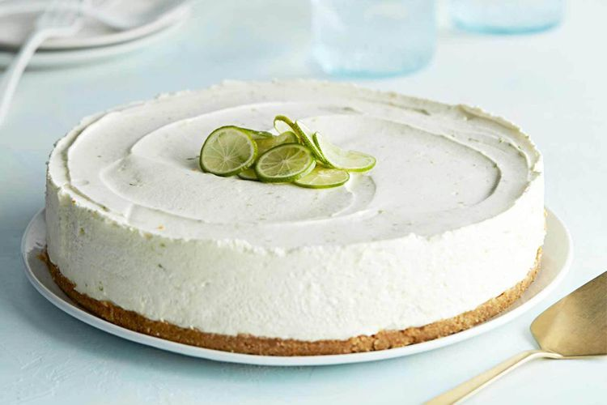

lime cheesecake

image by armando rafael
original by martha stewart :D it's really good try it
i've made a couple adjustments to the recipe. in my experience it's a small improvement
ingredients
- 1 cup finely ground graham crackers (from 9 crackers)
- 3 tablespoons sugar
- ½ teaspoon kosher salt
- 5 tablespoons unsalted butter, melted and cooled
- 2 packages (8 ounces each) cream cheese, room temperature
- 1 can (14 ounces) sweetened condensed milk
- ½ cup fresh Key lime juice, plus 2 teaspoons grated zest (from 16 limes), and thinly sliced lime rounds for serving
- ½ teaspoon pure vanilla extract
- ½ cup cold heavy cream
directions
- Whisk together cracker crumbs, sugar, and salt. Stir in butter until mixture resembles wet sand and holds together when squeezed.
- Press crumb mixture evenly into the bottom of a 9-inch springform pan.
- Freeze until firm, 15 minutes.
- Meanwhile, in the bowl of an electric mixer fitted with the paddle attachment, beat cream cheese and condensed milk on medium-high speed and stop just before it gets fluffy, about 5 minutes.
- Add lime juice, zest, and vanilla. Beat 1 minute more.
- In a separate bowl, whip cream to stiff peaks.
- Gently fold into cream-cheese mixture.
- Pour over chilled crust; smooth top with an offset spatula. Cover with plastic and refrigerate at least 12 hours and up to 3 days.
- Run a knife along cake's edge before releasing sides of pan, then under bottom to loosen. Serve, garnished with lime rounds.